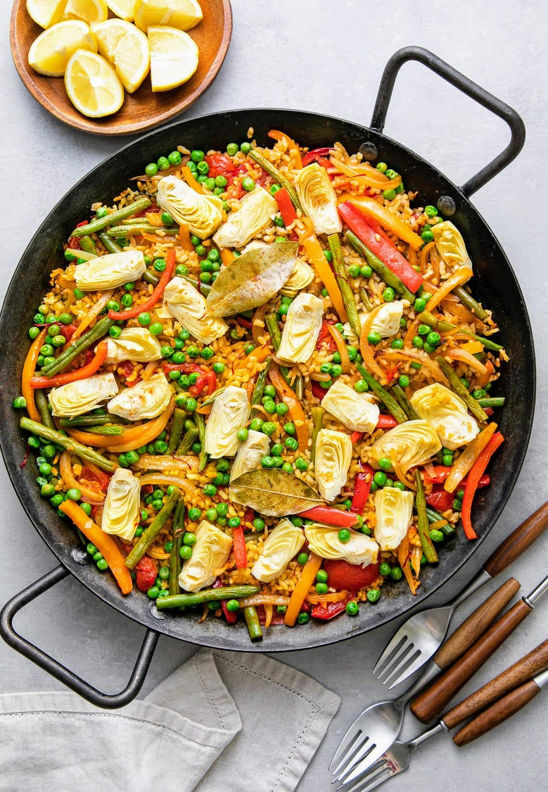

Vegan Paella

Description
Full of color and simple flavors, this Spanish inspired Vegan Paella is loaded with veggies and an eye-catching centerpiece for the table! No need to have a paella pan, you can use a large pot or dutch oven too.
Ingredients
- 1/2 heaping teaspoon saffron or turmeric
- 2 tablespoons olive oil or 1/4 cup water/veggie broth
- 1 large yellow onion, thinly sliced
- 2 bell peppers (red, orange or yellow), cored and thinly sliced
- 4 cloves garlic, minced
- 1 1/2 cups green beans or asparagus, cut into 2-inch pieces
- 1 lb. (16 oz) tomatoes, seeded and diced or 1 can (14 oz.) diced tomatoes + juice
- 1 1/2 teaspoons smoked paprika
- 1 teaspoon red pepper flakes, optional
- 2 – 3 bay leaves
- 1 1/2 cups short grain rice (Valencia or arborio)
- 3 1/2 cups low-sodium vegetable broth
- 1/2 – 1 teaspoon salt, or to taste
- 1 can/jar (14 oz) artichoke hearts in water, drained and quartered
- 1 cup green peas (fresh or frozen, thawed)
- chopped parsley leaves, to garnish
- lemon wedges, to serve
Instructions